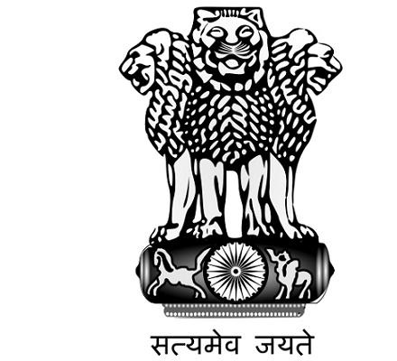
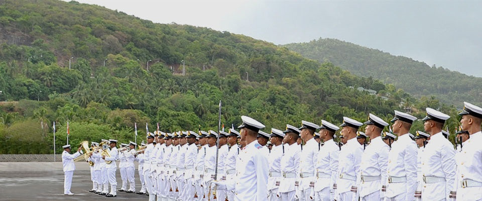
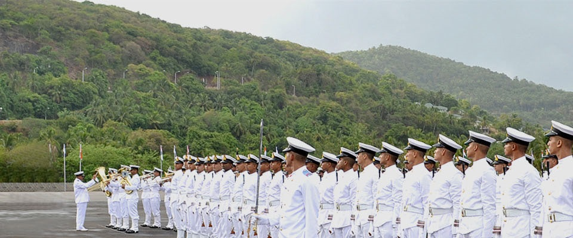

INDIAN NAVY

 


BENIGN ROLE
The ‘benign’ role is so named because violence has no part to play in its execution, nor is the potential to apply force a necessary prerequisite for undertaking these operations. Examples of benign tasks include humanitarian aid, disaster relief, Search and Rescue (SAR), ordnance disposal, diving assistance, salvage operations, Hydrographic surveys, etc. Maritime forces, because of their quick mobilization, are extremely useful in the early stages of a crisis for providing relief material, first aid and succour. Much of the capacity to perform these functions derives itself from the mobility, reach and endurance inherent in naval task forces, coupled with their SeaLift capability. For example, in the immediate aftermath of a natural disaster, one of the biggest challenges is the disbursement of food, water and relief material. It is under such conditions that military mobility, coupled with reliable communications are most effective in ensuring distribution to even the most remote afflicted areas. While specialized civilian agencies may take over at a later stage, maritime forces can provide the first helping hand and may be deployed to complement their efforts. The ICG is the designated national agency for SAR. Naval units may also be called upon to undertake SAR operations, as required.
OBJECTIVES
> Strengthen Political relations and goodwill
> Strengthen defense relations with friendly states
> Portray credible defense posture and capability
> Strengthen maritime security in IOR
> Promote regional and global stability
MISSIONS
> Constructive maritime engagement
> Maritime assistance and support
> Presence
> Peace support ops
TASKS
Overseas deployments
> Flag showing/Port visits
> Hosting foreign warship visits
> Technical and logistics assistance
> Foreign training
> Maritime Patrols
> Bilateral/ Multilateral Exercises
> OOAC tasks
> Non Combant Evacuation Ops (NEO)
> Peace enforcement, peace making, peace keeping and peace building
> Activities under the IONS program
Copyright 2018
This Page is desighned by Amit Geed